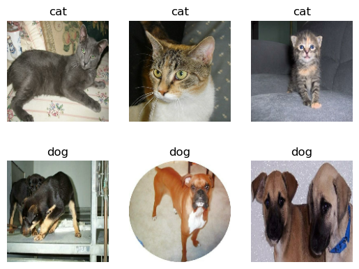
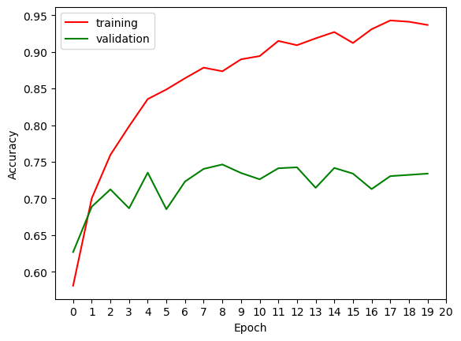
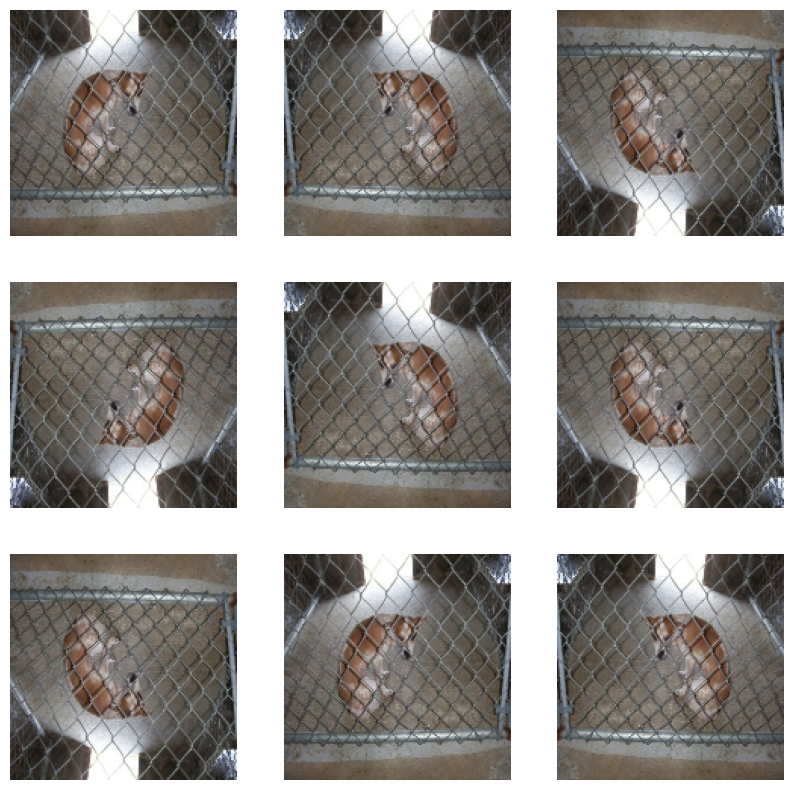
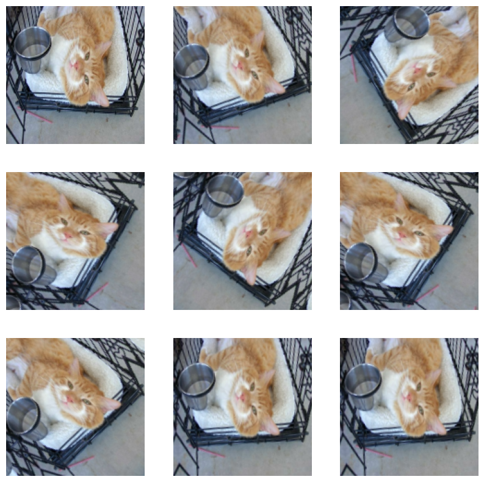
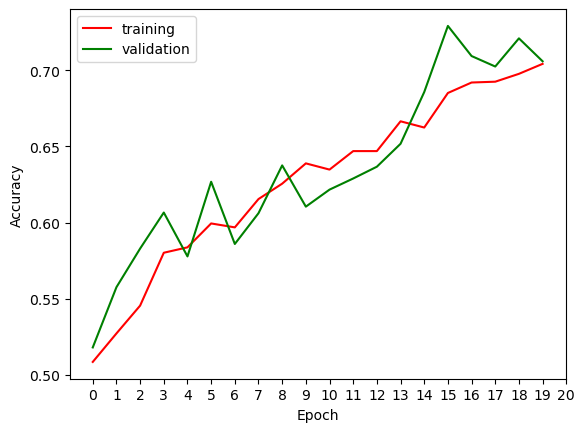
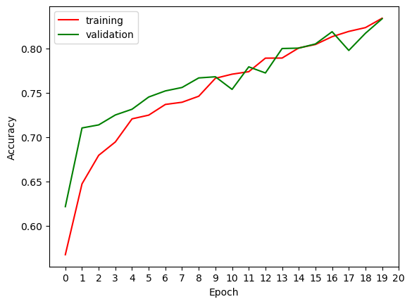
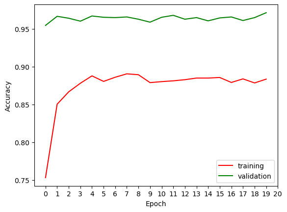

# importing necessary packages
import os
import numpy as np
# setting the Keras backend to TensorFlow
os.environ["KERAS_BACKEND"] = "tensorflow"
# importing tensflor's Keras module
from tensorflow import keras
from tensorflow.keras import utils, layers, models # for building and training neural networks
import tensorflow_datasets as tfds
from tensorflow import expand_dims # expanding dimensions of a tensor
from tensorflow import data as tf_data # tensorflow data module for building input pipelines
# importing Matplotlib for data visualization
from matplotlib import pyplot as plt
# importing the random module for generating random numbers
import randomWe will teach a machine learning algorithm to distinguish between pictures of dogs and pictures of cats. To do this, we will use tensorflow and keras. We will test several methods to see which method is the most accurate.
Step 1: Importing necessary packages to use in the project
Step 2: Import Data
We’ll use a sample data set from Kaggle that contains labeled images of cats and dogs. Its imported below and split between train data set, validation data set, and test data set.
# creates our training, validation, and testing data sets
train_ds, validation_ds, test_ds = tfds.load(
"cats_vs_dogs",
# 40% for training, 10% for validation, and 10% for test (the rest unused)
split=["train[:40%]", "train[40%:50%]", "train[50%:60%]"],
as_supervised=True, # Include labels
)
print(f"Number of training samples: {train_ds.cardinality()}")
print(f"Number of validation samples: {validation_ds.cardinality()}")
print(f"Number of test samples: {test_ds.cardinality()}")Number of training samples: 9305
Number of validation samples: 2326
Number of test samples: 2326From this we see how our data was split up!
Now, we will resize our data using the next two code blocks. The dataset contains images of different sizes, so we resize them to a fixed size of 150x150.
# resizing our data sets
resize_fn = keras.layers.Resizing(150, 150)
train_ds = train_ds.map(lambda x, y: (resize_fn(x), y)) # using lambda function to resize the train_ds code
validation_ds = validation_ds.map(lambda x, y: (resize_fn(x), y)) # using lambda function to resize the validation_ds code
test_ds = test_ds.map(lambda x, y: (resize_fn(x), y)) # using lambda function to resize teh test_ds codefrom tensorflow import data as tf_data
batch_size = 64
train_ds = train_ds.batch(batch_size).prefetch(tf_data.AUTOTUNE).cache()
validation_ds = validation_ds.batch(batch_size).prefetch(tf_data.AUTOTUNE).cache()
test_ds = test_ds.batch(batch_size).prefetch(tf_data.AUTOTUNE).cache()Step 3: Visualize some data
Below we have a function to vidualize random images from the data set. It will generate 3 random images of cats, and 3 random images of dogs. We will use matplotlib to visualize the images from the given data
# writing a function to randomly visualize 3 images of cats and 3 images of dogs
#show 3 cats, 3 dogs
def visualize(dataset):
#plt.figure(figsize=(10, 6))
dogs = 0
cats = 0
n=random.randint(1,20) # makes it so we have a random image of dogs and cats
for img, lbl in dataset.take(1): # iterates through the images and their corresponding label
for i in range(32+n):
i = i+n
if int(lbl[i]) == 1 and dogs < 3: # repeats while the number of dogs pulled is less than 3
ax = plt.subplot(2, 3, dogs+4)
plt.imshow(img[i].numpy().astype("uint8"))
plt.title("dog")
plt.axis("off") # removes axis numbering
dogs = dogs + 1
if int(lbl[i]) == 0 and cats < 3: # repeates while the number of cats pulled is less than 3
ax = plt.subplot(2, 3, cats+1)
plt.imshow(img[i].numpy().astype("uint8"))
plt.title("cat")
plt.axis("off") # removes axis numbering
cats = cats + 1
visualize(train_ds) # use the above function2024-03-10 17:24:51.820278: W tensorflow/core/kernels/data/cache_dataset_ops.cc:858] The calling iterator did not fully read the dataset being cached. In order to avoid unexpected truncation of the dataset, the partially cached contents of the dataset will be discarded. This can happen if you have an input pipeline similar to `dataset.cache().take(k).repeat()`. You should use `dataset.take(k).cache().repeat()` instead.
Step 4: Check Dog/Cat Frequencies
With the code below, we will iterator through the data and check to see how many images of dogs and cats we have. Note that each image has a label of 0 or 1. 0 correpsonds to cats while 1 corresponds to dogs.
# check label frequencies#The following line of code will create an iterator called labels_iterator.
labels_iterator= train_ds.unbatch().map(lambda image, label: label).as_numpy_iterator()
# computes the number of dogs and cats in our data. The label 0 corresponds to cats, and 1 corresponds to dogs
cats = 0
dogs = 0
for label in labels_iterator:
if label == 0: # label zero corresponds to cats
cats = cats + 1
if label ==1: # 1 corresponds to dogs
dogs = dogs + 1
accuracy = dogs/(cats+dogs) # assume always guessing dogs out of all the cats and dogs
rounded = round((accuracy*100),2) # rounds to 2 decimal places
print(f"There are {cats} cats and {dogs} dogs")
print(f"If we always guess dogs for each image the baseline will be {rounded}% accurate")There are 4637 cats and 4668 dogs
If we always guess dogs for each image the baseline will be 50.17% accurateThis gives us our baseline of 50.17% accuracy. This means that if we guessed dogs for each and every image in the data set, we would be 50.17% accurate since 50.17% of the images in the dataset are dogs.
Step 5: keras.Sequential model
We will start our models with a keras.Sequential model using several layers: Conv2D, MaxPooling2D, Flatten, Dense, and Dropout. We can experiment with the ordering of the layers, the frequency of the layers, and the size of the layers to alter our accuracy. The most succesful is seen below. There is also a graph comparing the training and validation sets.
# first modelfirst_model = models.Sequential([
# input layer with shape (150, 150, 3), matches the size of the input images
layers.Input((150, 150, 3)), #this layer needs to be same size as image
# Convolutional2D layer with 32 filters, each of size (3, 3) - relu activation
layers.Conv2D(32, (3, 3), activation='relu'),
# Maxpooling2D layer with pool size (2, 2)
layers.MaxPooling2D((2, 2)),
# Convolutional2D layer with 32 filters, each of size (3, 3) - relu activation
layers.Conv2D(32, (3, 3), activation='relu'),
# Maxpooling2D layer with pool size (2, 2)
layers.MaxPooling2D((2, 2)),
# Convolutional2D layer with 64 filters, each of size (3, 3) - relu activation
layers.Conv2D(64, (3, 3), activation='relu'),
# Dropout layer
layers.Dropout(0.2),
# Maxpooling2D layer with pool size (2, 2)
layers.MaxPooling2D((2, 2)),
#flatten layers
layers.Flatten(),
layers.Dense(64, activation='relu'),
layers.Dense(1) #the layer thats outputted
])
first_model.compile(optimizer='adam',
loss=keras.losses.BinaryCrossentropy(from_logits=True),
metrics=['accuracy'])history1 = first_model.fit(train_ds,
epochs=20,
validation_data=validation_ds)Epoch 1/20
146/146 [==============================] - 36s 246ms/step - loss: 5.1396 - accuracy: 0.5810 - val_loss: 0.5930 - val_accuracy: 0.6268
Epoch 2/20
146/146 [==============================] - 36s 246ms/step - loss: 0.5496 - accuracy: 0.7003 - val_loss: 0.5361 - val_accuracy: 0.6887
Epoch 3/20
146/146 [==============================] - 36s 247ms/step - loss: 0.4738 - accuracy: 0.7595 - val_loss: 0.5089 - val_accuracy: 0.7124
Epoch 4/20
146/146 [==============================] - 36s 249ms/step - loss: 0.4098 - accuracy: 0.7985 - val_loss: 0.5640 - val_accuracy: 0.6866
Epoch 5/20
146/146 [==============================] - 37s 256ms/step - loss: 0.3538 - accuracy: 0.8356 - val_loss: 0.5650 - val_accuracy: 0.7352
Epoch 6/20
146/146 [==============================] - 36s 245ms/step - loss: 0.3288 - accuracy: 0.8487 - val_loss: 0.8084 - val_accuracy: 0.6853
Epoch 7/20
146/146 [==============================] - 36s 248ms/step - loss: 0.2932 - accuracy: 0.8641 - val_loss: 0.7522 - val_accuracy: 0.7231
Epoch 8/20
146/146 [==============================] - 37s 252ms/step - loss: 0.2703 - accuracy: 0.8785 - val_loss: 0.6786 - val_accuracy: 0.7403
Epoch 9/20
146/146 [==============================] - 39s 271ms/step - loss: 0.2836 - accuracy: 0.8735 - val_loss: 0.6400 - val_accuracy: 0.7463
Epoch 10/20
146/146 [==============================] - 39s 264ms/step - loss: 0.2461 - accuracy: 0.8898 - val_loss: 0.7905 - val_accuracy: 0.7347
Epoch 11/20
146/146 [==============================] - 38s 257ms/step - loss: 0.2433 - accuracy: 0.8943 - val_loss: 0.7968 - val_accuracy: 0.7261
Epoch 12/20
146/146 [==============================] - 38s 258ms/step - loss: 0.2060 - accuracy: 0.9149 - val_loss: 0.7978 - val_accuracy: 0.7412
Epoch 13/20
146/146 [==============================] - 38s 260ms/step - loss: 0.2168 - accuracy: 0.9091 - val_loss: 0.7550 - val_accuracy: 0.7425
Epoch 14/20
146/146 [==============================] - 37s 253ms/step - loss: 0.1868 - accuracy: 0.9184 - val_loss: 0.7612 - val_accuracy: 0.7145
Epoch 15/20
146/146 [==============================] - 35s 243ms/step - loss: 0.1690 - accuracy: 0.9270 - val_loss: 0.8398 - val_accuracy: 0.7416
Epoch 16/20
146/146 [==============================] - 35s 239ms/step - loss: 0.2053 - accuracy: 0.9121 - val_loss: 0.8432 - val_accuracy: 0.7339
Epoch 17/20
146/146 [==============================] - 38s 257ms/step - loss: 0.1618 - accuracy: 0.9309 - val_loss: 0.9763 - val_accuracy: 0.7128
Epoch 18/20
146/146 [==============================] - 35s 243ms/step - loss: 0.1459 - accuracy: 0.9428 - val_loss: 0.8642 - val_accuracy: 0.7304
Epoch 19/20
146/146 [==============================] - 35s 238ms/step - loss: 0.1473 - accuracy: 0.9411 - val_loss: 0.9056 - val_accuracy: 0.7322
Epoch 20/20
146/146 [==============================] - 35s 236ms/step - loss: 0.1535 - accuracy: 0.9367 - val_loss: 0.9860 - val_accuracy: 0.7339plt.plot(history1.history["accuracy"], label = "training", color = "red")
plt.plot(history1.history["val_accuracy"], label = "validation", color = "green")
plt.gca().set(xlabel = "Epoch", ylabel = "Accuracy", xticks=np.arange(21))
plt.legend()
The accuracy of the first model is around 70%. This is significantly better than baseline (about 20%). There is eveidence for overfitting since the training accuracy rose to 93% and the validation accuracy was only at 70%. This is also evident on the graph with the seperation between the training and validation sets.
Step 6: Model with Data Augmentation
Now, we’re going to make the model better by adding some changes to the omages it learns from. This means showing it images that are a bit different, like flipping a cat image or turning it around. Even with these changes, the model can still recognize it’s a cat. By doing this, we help the model get better at understanding important features in pictures, no matter how they’re positioned or rotated. This will hopefully make our model more accurate.
We will start by defining two functions, flip and rotation. Flip will randomly flip the images while rotation will randomly rotate the images. Examples are shown below.
def flip():
'''
No paremeters. Returns 9 flipped versions of a random image from the dataset
'''
# Loop over train_ds data
for image, _ in train_ds.take(1):
plt.figure(figsize=(10, 10)) # creates a subplot for visualizing images
n=random.randint(1,20) # gets a random image to test the rotation on
first_image = image[n] #the random image
ax = plt.subplot(3, 3, 1)
plt.imshow(first_image / 255) #plot the first image normally
plt.axis('off')
for i in range(8):
ax = plt.subplot(3, 3, i + 2)
augmented_image = layers.RandomFlip()(expand_dims(first_image, 0)) #transform the image using flipping
plt.imshow(augmented_image[0] / 255)
plt.axis('off')def rotation():
'''
No paremeters. Returns 9 rotated versions of a random image from the dataset
'''
# Loop over train_ds data
for image, _ in train_ds.take(1):
plt.figure(figsize=(10, 10)) # creates a subplot for visualizing images
n=random.randint(1,20) # gets a random image to test the rotation on
first_image = image[n]
ax = plt.subplot(3, 3, 1)
plt.imshow(first_image / 255) # plots the first image normally
plt.axis('off')
for i in range(8):
ax = plt.subplot(3, 3, i + 2)
augmented_image = layers.RandomRotation(0.2)(expand_dims(first_image, 0)) # transofmr sthe image using rotation
plt.imshow(augmented_image[0] / 255)
plt.axis('off')flip()
rotation()
Now we will make our second model using data agumentation. Once again, to get the best results we need to experiment with different amounts of layers, adding more dropout layers, using bigger kernel sizes, and using different activation functions. This seems to be the best model I could create.
second_model = models.Sequential([
# Input layer with shape (150, 150, 3), matching the size of the input images
layers.Input((150, 150, 3)),
# Randomly flip the input images horizontally or vertically
layers.RandomFlip(),
# Randomly rotates the input images
layers.RandomRotation(0.2),
# convolutional2D layer with 32 filters, each of size (3, 3)- relu activation
layers.Conv2D(32, (3, 3), activation='relu'),
# Maxpooling2D layer with pool size (2, 2)
layers.MaxPooling2D((2, 2)),
# convolutional2D layer with 32 filters, each of size (3, 3)- relu activation
layers.Conv2D(32, (3, 3), activation='relu'),
# Maxpooling2D layer with pool size (2, 2)
layers.MaxPooling2D((2, 2)),
layers.Conv2D(64, (3, 3), activation='relu'),
# convolutional2D layer with 64 filters, each of size (3, 3)- relu activation
# Maxpooling2D layer with pool size (2, 2)
layers.MaxPooling2D((2, 2)),
layers.Flatten(), # flattens layers
layers.Dense(128, activation='relu'),
layers.Dropout(0.2),
layers.Dense(1)
])
second_model.compile(optimizer='adam',
loss=keras.losses.BinaryCrossentropy(from_logits=True),
metrics=['accuracy'])history2 = second_model.fit(train_ds,
epochs=20,
validation_data=validation_ds)Epoch 1/20
146/146 [==============================] - 37s 252ms/step - loss: 5.5375 - accuracy: 0.5085 - val_loss: 0.6789 - val_accuracy: 0.5181
Epoch 2/20
146/146 [==============================] - 36s 245ms/step - loss: 0.6796 - accuracy: 0.5272 - val_loss: 0.6669 - val_accuracy: 0.5576
Epoch 3/20
146/146 [==============================] - 36s 245ms/step - loss: 0.6669 - accuracy: 0.5455 - val_loss: 0.6565 - val_accuracy: 0.5830
Epoch 4/20
146/146 [==============================] - 36s 247ms/step - loss: 0.6527 - accuracy: 0.5802 - val_loss: 0.6496 - val_accuracy: 0.6066
Epoch 5/20
146/146 [==============================] - 36s 245ms/step - loss: 0.6480 - accuracy: 0.5838 - val_loss: 0.6448 - val_accuracy: 0.5778
Epoch 6/20
146/146 [==============================] - 37s 251ms/step - loss: 0.6421 - accuracy: 0.5995 - val_loss: 0.6403 - val_accuracy: 0.6268
Epoch 7/20
146/146 [==============================] - 37s 252ms/step - loss: 0.6443 - accuracy: 0.5969 - val_loss: 0.6302 - val_accuracy: 0.5860
Epoch 8/20
146/146 [==============================] - 40s 271ms/step - loss: 0.6319 - accuracy: 0.6155 - val_loss: 0.6294 - val_accuracy: 0.6062
Epoch 9/20
146/146 [==============================] - 38s 260ms/step - loss: 0.6269 - accuracy: 0.6256 - val_loss: 0.6233 - val_accuracy: 0.6376
Epoch 10/20
146/146 [==============================] - 36s 248ms/step - loss: 0.6137 - accuracy: 0.6389 - val_loss: 0.6076 - val_accuracy: 0.6105
Epoch 11/20
146/146 [==============================] - 36s 247ms/step - loss: 0.6113 - accuracy: 0.6348 - val_loss: 0.6109 - val_accuracy: 0.6217
Epoch 12/20
146/146 [==============================] - 36s 247ms/step - loss: 0.6051 - accuracy: 0.6470 - val_loss: 0.6064 - val_accuracy: 0.6290
Epoch 13/20
146/146 [==============================] - 36s 247ms/step - loss: 0.6065 - accuracy: 0.6470 - val_loss: 0.5921 - val_accuracy: 0.6367
Epoch 14/20
146/146 [==============================] - 36s 249ms/step - loss: 0.5914 - accuracy: 0.6665 - val_loss: 0.5962 - val_accuracy: 0.6518
Epoch 15/20
146/146 [==============================] - 40s 273ms/step - loss: 0.5926 - accuracy: 0.6624 - val_loss: 0.5635 - val_accuracy: 0.6857
Epoch 16/20
146/146 [==============================] - 37s 254ms/step - loss: 0.5691 - accuracy: 0.6851 - val_loss: 0.5563 - val_accuracy: 0.7291
Epoch 17/20
146/146 [==============================] - 37s 252ms/step - loss: 0.5596 - accuracy: 0.6920 - val_loss: 0.5326 - val_accuracy: 0.7094
Epoch 18/20
146/146 [==============================] - 36s 249ms/step - loss: 0.5606 - accuracy: 0.6925 - val_loss: 0.5396 - val_accuracy: 0.7025
Epoch 19/20
146/146 [==============================] - 36s 247ms/step - loss: 0.5513 - accuracy: 0.6977 - val_loss: 0.5153 - val_accuracy: 0.7210
Epoch 20/20
146/146 [==============================] - 36s 248ms/step - loss: 0.5448 - accuracy: 0.7042 - val_loss: 0.5402 - val_accuracy: 0.7059plt.plot(history2.history["accuracy"], label = "training", color = "red")
plt.plot(history2.history["val_accuracy"], label = "validation", color = "green")
plt.gca().set(xlabel = "Epoch", ylabel = "Accuracy", xticks=np.arange(21))
plt.legend()
The validation accuracy ended up being about 70%. This is pretty much the smae as the first model, but we can see by the graph that there’s a big decrease in overfitting. The training and validation sets trail one another and end up being very close to one another in accuracy. So even though this model didn’t necessarily show more accuracy than the first model, the less overfitting is a good sign that this model is still an improvement.
Step 7: Method 3 Data Preprocessing
Sometimes, it’s good to change how the model sees the data. For example, instead of colors going from 0 to 255, it’s easier for the model if they go from 0 to 1 or even -1 to 1. By doing this, the model can pay more attention to the important details in the pictures during learning, and it won’t have to work as hard to understand different color ranges. This is kind of similiar to the second method.
The following code will create a preprocessing layer called preprocessor which you can slot into your model pipeline. Then, we will implement the third model.
i = keras.Input(shape=(150, 150, 3))
# The pixel values have the range of (0, 255), but many models will work better if rescaled to (-1, 1.)
# outputs: `(inputs * scale) + offset`
scale_layer = keras.layers.Rescaling(scale=1 / 127.5, offset=-1)
x = scale_layer(i)
preprocessor = keras.Model(inputs = i, outputs = x)
third_model = models.Sequential([
preprocessor,
layers.RandomFlip(),
layers.RandomRotation(0.2),
# convolutional2D layer with 32 filters, each of size (3, 3)- relu activation
layers.Conv2D(32, (3, 3), activation='relu'),
# Maxpooling2D layer with pool size (2, 2)
layers.MaxPooling2D((2, 2)),
# convolutional2D layer with 32 filters, each of size (3, 3)- relu activation
layers.Conv2D(32, (3, 3), activation='relu'),
# Maxpooling2D layer with pool size (2, 2)
layers.MaxPooling2D((2, 2)),
# convolutional2D layer with 32 filters, each of size (3, 3)- relu activation
layers.Conv2D(64, (3, 3), activation='relu'),
# Maxpooling2D layer with pool size (2, 2)
layers.MaxPooling2D((2, 2)),
# convolutional2D layer with 32 filters, each of size (3, 3)- relu activation
layers.Conv2D(64, (3, 3), activation='relu'),
# Maxpooling2D layer with pool size (2, 2)
layers.MaxPooling2D((2, 2)),
layers.Flatten(), # flattens layers
layers.Dense(128, activation='relu'),
layers.Dropout(0.2),
layers.Dense(1, activation="sigmoid")
])
third_model.compile(optimizer='adam',
loss=keras.losses.BinaryCrossentropy(),
metrics=['accuracy'])history3 = third_model.fit(train_ds,
epochs=20,
validation_data=validation_ds)Epoch 1/20
146/146 [==============================] - 44s 299ms/step - loss: 0.6774 - accuracy: 0.5675 - val_loss: 0.6414 - val_accuracy: 0.6217
Epoch 2/20
146/146 [==============================] - 39s 270ms/step - loss: 0.6278 - accuracy: 0.6473 - val_loss: 0.5693 - val_accuracy: 0.7102
Epoch 3/20
146/146 [==============================] - 40s 271ms/step - loss: 0.5924 - accuracy: 0.6794 - val_loss: 0.5621 - val_accuracy: 0.7137
Epoch 4/20
146/146 [==============================] - 40s 271ms/step - loss: 0.5779 - accuracy: 0.6945 - val_loss: 0.5415 - val_accuracy: 0.7248
Epoch 5/20
146/146 [==============================] - 40s 275ms/step - loss: 0.5534 - accuracy: 0.7205 - val_loss: 0.5363 - val_accuracy: 0.7313
Epoch 6/20
146/146 [==============================] - 40s 275ms/step - loss: 0.5408 - accuracy: 0.7247 - val_loss: 0.5196 - val_accuracy: 0.7451
Epoch 7/20
146/146 [==============================] - 38s 257ms/step - loss: 0.5301 - accuracy: 0.7367 - val_loss: 0.5099 - val_accuracy: 0.7519
Epoch 8/20
146/146 [==============================] - 38s 263ms/step - loss: 0.5211 - accuracy: 0.7392 - val_loss: 0.5025 - val_accuracy: 0.7558
Epoch 9/20
146/146 [==============================] - 37s 257ms/step - loss: 0.5066 - accuracy: 0.7459 - val_loss: 0.5011 - val_accuracy: 0.7666
Epoch 10/20
146/146 [==============================] - 37s 255ms/step - loss: 0.4857 - accuracy: 0.7661 - val_loss: 0.4826 - val_accuracy: 0.7678
Epoch 11/20
146/146 [==============================] - 37s 255ms/step - loss: 0.4715 - accuracy: 0.7708 - val_loss: 0.5164 - val_accuracy: 0.7537
Epoch 12/20
146/146 [==============================] - 37s 255ms/step - loss: 0.4631 - accuracy: 0.7736 - val_loss: 0.4623 - val_accuracy: 0.7790
Epoch 13/20
146/146 [==============================] - 40s 276ms/step - loss: 0.4468 - accuracy: 0.7888 - val_loss: 0.4717 - val_accuracy: 0.7721
Epoch 14/20
146/146 [==============================] - 41s 282ms/step - loss: 0.4388 - accuracy: 0.7889 - val_loss: 0.4295 - val_accuracy: 0.7997
Epoch 15/20
146/146 [==============================] - 40s 272ms/step - loss: 0.4229 - accuracy: 0.8003 - val_loss: 0.4341 - val_accuracy: 0.8001
Epoch 16/20
146/146 [==============================] - 39s 270ms/step - loss: 0.4155 - accuracy: 0.8042 - val_loss: 0.4280 - val_accuracy: 0.8048
Epoch 17/20
146/146 [==============================] - 38s 264ms/step - loss: 0.4069 - accuracy: 0.8130 - val_loss: 0.4048 - val_accuracy: 0.8186
Epoch 18/20
146/146 [==============================] - 194s 1s/step - loss: 0.3905 - accuracy: 0.8189 - val_loss: 0.4465 - val_accuracy: 0.7975
Epoch 19/20
146/146 [==============================] - 38s 260ms/step - loss: 0.3883 - accuracy: 0.8232 - val_loss: 0.3984 - val_accuracy: 0.8169
Epoch 20/20
146/146 [==============================] - 38s 258ms/step - loss: 0.3733 - accuracy: 0.8337 - val_loss: 0.3863 - val_accuracy: 0.8332plt.plot(history3.history["accuracy"], label = "training", color = "red")
plt.plot(history3.history["val_accuracy"], label = "validation", color = "green")
plt.gca().set(xlabel = "Epoch", ylabel = "Accuracy", xticks=np.arange(21))
plt.legend()
We can see we reached an accuracy of about 82%! This has show a 10% increase from the first and second models. We are beginning to make huge progress in our models. We can see there is even less overfitting here than there was in the second model, with the training and validation graphs being almost the same towards the end.
Step 8: Model 4 Transfer Learning
Until now, we’ve been teaching models to tell the difference between cats and dogs right from the beginning. But sometimes, others have already trained a model that recognizes things in pictures, and it might know useful patterns. For instance, people train models for recognizing different things in images.
To try this, we first use an existing “base model,” include it in a complete model for our specific job, and then train that combined model.
The following code downloads MobileNetV3Large and configures it as a layer that can be included in the model.
IMG_SHAPE = (150, 150, 3)
base_model = keras.applications.MobileNetV3Large(input_shape=IMG_SHAPE,
include_top=False,
weights='imagenet')
base_model.trainable = False
i = keras.Input(shape=IMG_SHAPE)
x = base_model(i, training = False)
base_model_layer = keras.Model(inputs = i, outputs = x)WARNING:tensorflow:`input_shape` is undefined or non-square, or `rows` is not 224. Weights for input shape (224, 224) will be loaded as the default.WARNING:tensorflow:`input_shape` is undefined or non-square, or `rows` is not 224. Weights for input shape (224, 224) will be loaded as the default.fourthmodel = models.Sequential([
# inputted layer with shape (150, 150, 3), same size of the input images
layers.Input((150, 150, 3)),
layers.RandomFlip(), # randomly flips the images
layers.RandomRotation(0.2), # randomly rotates the images
base_model_layer,
# globalmaxpooling2D layer
layers.GlobalMaxPooling2D(),
# droupout with a dropout rate of 0.5
layers.Dropout(0.5),
layers.Dense(1)
])
# Compiling the model with an Adam optimizer
fourthmodel.compile(optimizer='adam',
loss=keras.losses.BinaryCrossentropy(from_logits=True),
metrics=['accuracy'])
fourthmodel.build(train_ds)
fourthmodel.summary()Model: "sequential_6"
_________________________________________________________________
Layer (type) Output Shape Param #
=================================================================
random_flip_5 (RandomFlip) (None, 150, 150, 3) 0
random_rotation_5 (RandomR (None, 150, 150, 3) 0
otation)
model_5 (Functional) (None, 5, 5, 960) 2996352
global_max_pooling2d_2 (Gl (None, 960) 0
obalMaxPooling2D)
dropout_6 (Dropout) (None, 960) 0
dense_10 (Dense) (None, 1) 961
=================================================================
Total params: 2997313 (11.43 MB)
Trainable params: 961 (3.75 KB)
Non-trainable params: 2996352 (11.43 MB)
_________________________________________________________________history4 = fourthmodel.fit(train_ds,
epochs=20,
validation_data=validation_ds)Epoch 1/20
146/146 [==============================] - 31s 199ms/step - loss: 2.3508 - accuracy: 0.7531 - val_loss: 0.2859 - val_accuracy: 0.9544
Epoch 2/20
146/146 [==============================] - 29s 201ms/step - loss: 1.0780 - accuracy: 0.8502 - val_loss: 0.2069 - val_accuracy: 0.9665
Epoch 3/20
146/146 [==============================] - 30s 203ms/step - loss: 0.8550 - accuracy: 0.8666 - val_loss: 0.1756 - val_accuracy: 0.9639
Epoch 4/20
146/146 [==============================] - 28s 189ms/step - loss: 0.6457 - accuracy: 0.8779 - val_loss: 0.1655 - val_accuracy: 0.9600
Epoch 5/20
146/146 [==============================] - 29s 199ms/step - loss: 0.5234 - accuracy: 0.8877 - val_loss: 0.1211 - val_accuracy: 0.9669
Epoch 6/20
146/146 [==============================] - 28s 192ms/step - loss: 0.4872 - accuracy: 0.8804 - val_loss: 0.1082 - val_accuracy: 0.9652
Epoch 7/20
146/146 [==============================] - 28s 195ms/step - loss: 0.4099 - accuracy: 0.8859 - val_loss: 0.1014 - val_accuracy: 0.9647
Epoch 8/20
146/146 [==============================] - 28s 189ms/step - loss: 0.3417 - accuracy: 0.8904 - val_loss: 0.0928 - val_accuracy: 0.9656
Epoch 9/20
146/146 [==============================] - 27s 188ms/step - loss: 0.3346 - accuracy: 0.8892 - val_loss: 0.0902 - val_accuracy: 0.9626
Epoch 10/20
146/146 [==============================] - 28s 189ms/step - loss: 0.3362 - accuracy: 0.8788 - val_loss: 0.1238 - val_accuracy: 0.9587
Epoch 11/20
146/146 [==============================] - 28s 195ms/step - loss: 0.3400 - accuracy: 0.8801 - val_loss: 0.0925 - val_accuracy: 0.9652
Epoch 12/20
146/146 [==============================] - 28s 189ms/step - loss: 0.3278 - accuracy: 0.8811 - val_loss: 0.1033 - val_accuracy: 0.9678
Epoch 13/20
146/146 [==============================] - 28s 193ms/step - loss: 0.3311 - accuracy: 0.8826 - val_loss: 0.0894 - val_accuracy: 0.9626
Epoch 14/20
146/146 [==============================] - 27s 186ms/step - loss: 0.3218 - accuracy: 0.8848 - val_loss: 0.0918 - val_accuracy: 0.9647
Epoch 15/20
146/146 [==============================] - 27s 186ms/step - loss: 0.3229 - accuracy: 0.8848 - val_loss: 0.1121 - val_accuracy: 0.9604
Epoch 16/20
146/146 [==============================] - 27s 188ms/step - loss: 0.3198 - accuracy: 0.8855 - val_loss: 0.1091 - val_accuracy: 0.9643
Epoch 17/20
146/146 [==============================] - 27s 188ms/step - loss: 0.3475 - accuracy: 0.8790 - val_loss: 0.0946 - val_accuracy: 0.9656
Epoch 18/20
146/146 [==============================] - 27s 188ms/step - loss: 0.3298 - accuracy: 0.8837 - val_loss: 0.1022 - val_accuracy: 0.9609
Epoch 19/20
146/146 [==============================] - 28s 189ms/step - loss: 0.3472 - accuracy: 0.8783 - val_loss: 0.0979 - val_accuracy: 0.9647
Epoch 20/20
146/146 [==============================] - 27s 188ms/step - loss: 0.3429 - accuracy: 0.8834 - val_loss: 0.0934 - val_accuracy: 0.9712plt.plot(history4.history["accuracy"], label = "training", color = "red")
plt.plot(history4.history["val_accuracy"], label = "validation", color = "green")
plt.gca().set(xlabel = "Epoch", ylabel = "Accuracy", xticks=np.arange(21))
plt.legend()
This model has about a 96% validation accuracy which is a big improvment to the other models. Here, overfitting is not present. Instead, the validation data is more accurate than the training validation. I’m not sure why that is, but I’m happy its at very accurate!
Step 9: Final Testing
fourthmodel.evaluate(test_ds, verbose=2)37/37 - 6s - loss: 0.1222 - accuracy: 0.9604 - 6s/epoch - 173ms/step[0.12224007397890091, 0.9604471325874329]The final evaluation shows a 96% accuracy. All things considered this is very accurate!